Math
22 no-prep Math resources with answer keys: reading comprehension, reading trails, and more – filter by grade.
22 resources
Grade

Geometry Reading Comprehension Passages | Math Scavenger Hunt 7-8

The Travel Agency Map Scale Role Play | Winter Math Center Grade 4

The Snowman Workshop Measurement Role Play | Winter Math Center Grade 2

Cookie Bakery Addition Subtraction Role Play | Winter Math Center Grade 1

The Christmas Bakery Weight Role Play | Christmas Math Center Grade 3

Gingerbread Bake Shop Multiplication Role Play | Winter Math Center Grade 2

Place Value Reading Comprehension Passages | Math Scavenger Hunt 1-2
Unit of measurement – Reading Comprehension: Cloze, Listening & Word Search
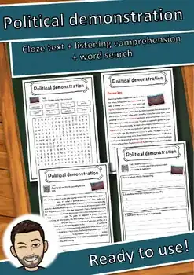
Political demonstration – Reading Comprehension: Cloze, Listening & Word Search
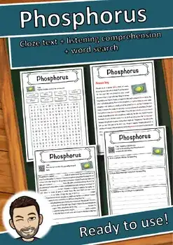
Phosphorus – Reading Comprehension: Cloze Text, Listening Task & Word Search
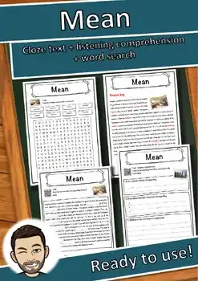
Mean – Reading Comprehension: Cloze Text, Listening Task & Word Search
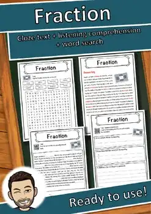
Fraction – Reading Comprehension: Cloze Text, Listening Task & Word Search
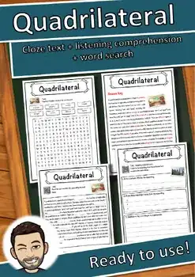
Quadrilateral – Reading Comprehension: Cloze Text, Listening Task & Word Search
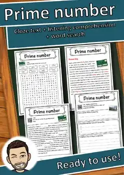
Prime number – Reading Comprehension: Cloze Text, Listening Task & Word Search
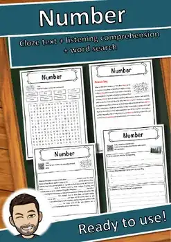
Number – Reading Comprehension: Cloze Text, Listening Task & Word Search
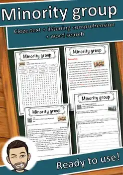
Minority group – Reading Comprehension: Cloze Text, Listening Task & Word Search
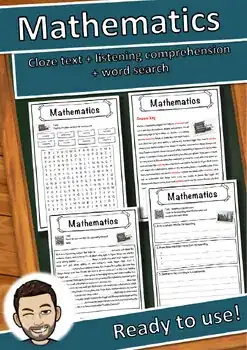
Mathematics – Reading Comprehension: Cloze Text, Listening Task & Word Search
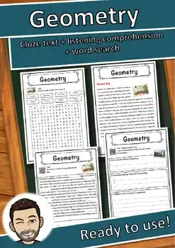
Geometry – Reading Comprehension: Cloze Text, Listening Task & Word Search
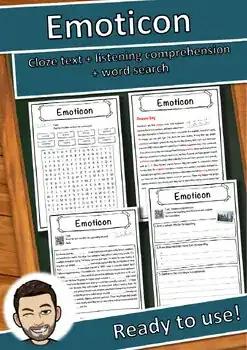
Emoticon – Reading Comprehension: Cloze Text, Listening Task & Word Search
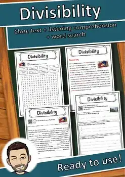
Divisibility – Reading Comprehension: Cloze Text, Listening Task & Word Search
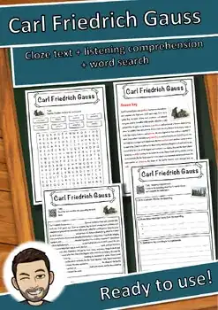
Carl Friedrich Gauss – Reading Comprehension: Cloze, Listening & Word Search

Pull-Up Nets 3D Shapes Craft | Hands-On Geometry Activity & Worksheets Gr 2-5
No resources found – try a different search term or filter.